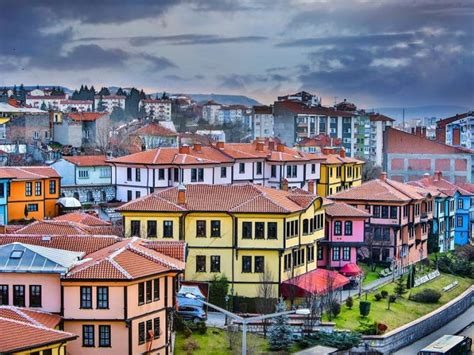
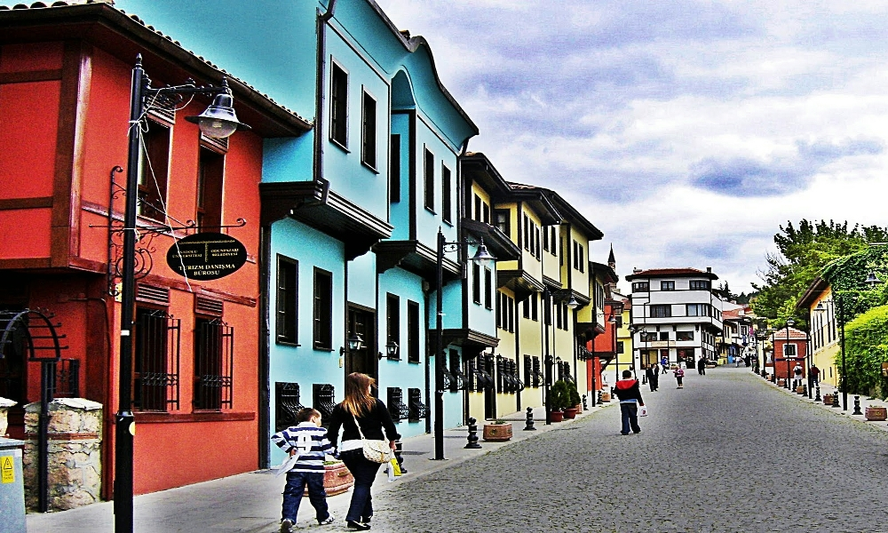
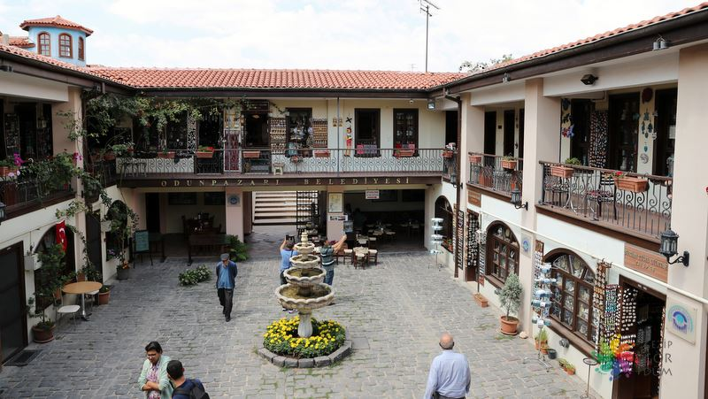

Eskişehir'in Kültürel ve Tarihi Yerleri
Odunpazarı Evleri
Odunpazarı semti kentin güneyindeki tepelerde kurulmuştur. Geleneksel Anadolu Türk Mimarisi örneklerini koruyan semt, kıvrımlı yolları, çıkmaz sokakları. ahşap süslemeli-bitişik düzenli- cumbalı evleri ile örf, adet ve geleneklerini koruyarak günümüze kadar gelmiştir. Odunpazarı ''Tarihi ve Kentsel Sit'' olarak koruma altına alınmıştır.
Odunpazarı Belediyesinin Odunpazarı Evleri’ni Yaşatma Projesi bu tarihî ve kültürel mirasın dünyaya tanıtılması açısından önemlidir. UNESCO Dünya Miras Listesi’nde yer alan ve bu proje kapsamında öncelikle geleneksel Odunpazarı evlerinin yoğun olarak bulunduğu 30 sokakta 300 ev, 3 Camii, 1 Külliye, 2 Kervansaray, 15 Çeşme, 1 Han’ın restorasyonu ve aslına uygun yapımı gerçekleştirilmiştir.
Evliya Çelebi’nin Seyahatname’sinde de adından büyük bir övgü ile söz edilen Odunpazarı, bugün Seyahatname’de adı geçen sokakların 5’ini aynı ismi ile korumaya devam etmektedir.
Dar sokakların iki yanına sıralanan evlerin bazıları bembeyaz duvarlarının arasında kahverengi çerçeveleri ile bir yağlıboya tablo gibi görünüyor. Bazı evler ise çivit mavisi, kiremit kırmızısı görünümleri ile bu tabloya farklı renkler katıyor. Evler, Osmanlı döneminin kent mimarisinin önemli özelliklerini içinde barındırmaktadır. Evlerin sokağa bakan cepheleri çıkmalı, konsolludur.
Hem yaşam alanı hem de ailenin ekonomik faaliyetine uygun biçimde tasarlanan evlerde genellikle alt katta mutfak, ahır, çamaşırlık veya depo bulunurken aile, yaşamını üst katlarda sürdürmektedir.
Bölgede evlerin yanı sıra döneme özgü Kurşunlu Camii ve Külliyesi de bulunmaktadır. Ayrıca bölgenin geleneksel el sanatlarının örneklerini görebileceğiniz tarihi Atlıhan, Eskişehir Sanatları Çarşıları ve dünyada sadece Odunpazarı’nda bulunan Lületaşı Müzesi de mutlaka ziyaret edilmesi gereken yerlerin arasında yer alır.
Odunpazarı; geleneksel el sanatları konusunda bakır işlemeciliği, kalaycılık, antika ve ahşap oymacılığı meraklılarının önemli bir uğrak noktasıdır. Beyler Sokağı’nda yer alan antikacı, Kurşunlu Camii Sokağı’nda yer alan ahşap oyuncakçı, bölgeye akın eden ziyaretçilere Odunpazarı’ndan küçük ama çok özel anı objeleri ile sevdiklerine hoş bir sürpriz yapma imkânı sunmaktadır.
Odunpazarı’nın her sokağı, her konağı her an farklı bir sürprizle karşınıza çıkabilir. Hafız Ahmet Efendi Konağı’nda yer alan; Mustafa Kemal Atatürk ve dönemin İran Şahı Rıza Pehlevi’ye armağan edilen “Gül Asa”. Bir örneği hâlen Anıtkabir Müzesi’nde sergilenen “Gül Asa” büyük lületaşı ustası Hafız Ahmet Efendi tarafından yapılmış önemli bir eserdir.
“...Eşraf ve sipahisi çoktur... Şehir 17 mahalledir. Evleri bağlı, bahçeli ve mamurdur... Şehrin 4 çevresi gül, gülistan, bağ ve bostan dolu olup hububatı çok bir şehirdir...” Evliya Çelebi, Seyahatname
Kurşunlu Camii ve Külliyesi

Kurşunlu Cami ve Külliyesi Odunpazarı semtinde yer almaktadır. Tarihi Odunpazarı Evleri’nin yanında bulunan külliye ve tarihi evler adeta birbirini tamamlar ve sizi geçmişe götürecek bir yolculuğa çıkartır.
Kurşunlu Külliyesi, 16. yüzyıl Osmanlı dönemine ait bir eserdir. Osmanlı Devleti vezirlerinden Çoban Mustafa Paşa tarafından 1517 yılında yapılmıştır. Topkapı Sarayı Müzesi Arşivi’nde bulunan vakıf kaydına göre, Büyük Kervansaray hariç, Külliye içinde bulunan binaların tamamı vezir Çoban Mustafa Paşa tarafından 1517-1525 yılları arasında inşa ettirilmiş ve muhtemelen 1525 yılında tamamlanmıştır. Kurşunlu Külliyesi’nin mimarı muhtemelen, Mimar Sinan’dan önce mimarbaşı olan, Acem Ali’dir. Gerçek adı Alaeddin Ali Bey olan Acem Ali (Acem Alisi ya da Esir Ali diye de bilinir) klasik Osmanlı mimarlığında adı bilinen ilk mimarbaşıdır (1519-1537).
Külliye; cami, şadırvan, zaviye (küçük tekke), talimhane, harem, imaret, Mevlevi şeyhlerine ait türbe ve iki kervansaraydan oluşmaktadır.
İMARET; Vakfiyede bildirilen ambar, yemek salonu ve mutfaktan dolayı bu birim karşısındaki kubbeli aşhane ile birlikte yemekhane yapısı olduğu belirtiliyor. Yapı, giriş bölümünden sonra enlemesine atılmış dört sivri kemerle desteklenen tonozla örtülüdür.

AŞEVİ;İmaretin mutfağı olabilecek batı girişinin kuzeyindedir. Batı duvarında, ocak nişinin bulunduğu noktada anıtsal tutulan bacasıyla ve halkın verdiği bilgiye göre 19. yüzyılın sonlarından itibaren saat kulesi olarak 1960’lara kadar kullanılmıştır.
KERVANSARAY; günümüzde nikâh salonu olarak kullanılıyor. Ayrıca; Sıcak Cam Üfleme Atölyesi ve Cam Sanatları Merkezi bulunmaktadır. Bu kısım Uluslararası Odunpazarı Cam Festivali ve birçok etkinliğe ev sahipliği yapmaktadır.
CAMİ; Cami’nin kubbesi kurşunla kaplı olduğundan Kurşunlu Camii adını almıştır. Kubbe içi kalem işleriyle süslüdür. Cami, kare planlı kubbeyle örtülü, beş bölümlü, son cemaat yeri bulunan ve Külliye’de kitabeye sahip tek yapıdır. Kesme taş malzemeyle yapılmış caminin son cemaat yerinde bulunan sütunlar ve başlıklarında mermer kullanılmıştır. Klasik Dönem özelliği olan sivri kemer ve mukarnaslı sütun başlıkları da görülür.
SIBYAN MEKTEBİ; Revaklı ve tek mekânlıdır. Biri giriş kısmı, diğeri kapalı kısım olmak üzere kubbeyle örtülü iki mekân bulunmaktadır. Taş ve tuğlayla oluşturulan almaşık teknikte yapılmıştır. Bizans dönemine ait devşirme malzemeler de görülür. Günümüzde Nisan 2010 tarihinden itibaren kütüphane olarak kullanılıyor.
MEDRESE(HANİKÂH); Medrese, hanikâh ve Mevlevi Âsitanesi olarak da adlandırılır. L biçimindeki kubbeli mekâna ve hücrelere, kubbeli mekânın önünde bulunan merdivenlerden ulaşılır. Yenilemelerle, avluya bakan kuzey cephe boyunca revak, destek ve örtü elemanlarıyla yeniden inşa edilmiştir. Semahane olarak kullanılan bölümünde kuzey cephesi sivri kemeri bir eyvan niteliğine büründürülmüştür. Mekân, günümüzde dünyada açılan ilk Lületaşı Müzesi olarak kullanılmaktadır. Ayrıca Osmanlı döneminde eğitim görenlerin konaklama olarak kullandıkları odalar bugün atölyeye dönüştürülmüştür.
TABHANE; Hanikâh ile aynı düzlemde Cami’ye paralel olarak gelişen ve vakfiyede yer alan misafir odaları için en uygun yer olarak düşünülebilir. Bu mekânın Mevlevihane’nin harem kısmı olarak kullanıldığı da ileri sürülür. Birbirine eş büyüklükte dört kubbeli mekân ve önünde bulunan revakla, hanikâhla görsel bir bütünlük meydana getirir.
Atlıhan El Sanatları Çarşısı
1850’li yıllarda Takattin Bey tarafından çevre köy, kasaba ve şehirlerden gelen pazarcıların, seyyahların ve köylülerin hem kendilerinin hem de hayvanlarının konaklamaları için yaptırılır. Atlıhan, hem dinlenilip konaklanan hem hayvanların bakımının yapıldığı hem de içinde çay ocağı bulunan bir yer olması dolayısıyla bölge halkının da toplandığı, dönemin bütün sosyal, siyasi ve ekonomik gündeminin oluştuğu bir mekân hâlini alır. Zaman içinde Han, Tavafçı Hanı, Odunpazarı Hanı gibi isimlerle anılır. 20. yüzyılın özellikle ikinci yarısından sonra han, eski işlevini yitirerek metruk ve harabeye dönüşür. Han, Odunpazarı Belediyesi tarafından Odunpazarı Evleri Yaşatma Projesi kapsamında 2006 yılında, orijinal mimarisi göz önünde bulundurularak Atlıhan adıyla yeniden inşa edilir.
768 metrekarelik bir alanda yer alan han, geleneksel mimari unsurları da içinde barındıran bir yapıdır. Zemin ve birinci kat olmak üzere iki kattan oluşan Atlıhan’da lületaşının üretildiği ve satıldığı birimler bulunmaktadır. Çarşıda diğer geleneksel el sanatları ürünleri de görülebilir.